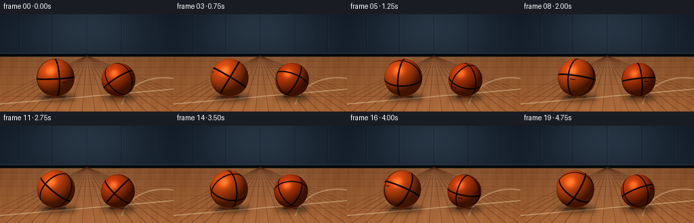
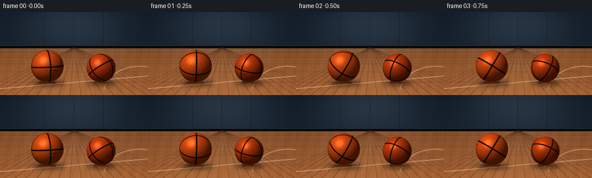

CODING AGENTS AS PIXEL WORLD MODELS
traex/GPT-5.6-Sol · instance_preservation_0026
点击播放 · 原生 RGB 像素
逐轮保存的候选
回放视频、检查图与代码变化。
每份候选均可单独播放。实际图片检查记录在下方工具轨迹中。
候选 01播放与检查图
点击播放 · 原生 RGB 像素


展开代码变化
--- 上一保存版本
+++ 本次保存版本
@@ -0,0 +1,238 @@
+from pathlib import Path
+import json, math
+import numpy as np
+from PIL import Image, ImageDraw, ImageFilter
+import artifact_io
+
+CASE_DIR = Path(__file__).resolve().parent
+SPEC = json.loads((CASE_DIR / 'task_spec.json').read_text())
+W, H = int(SPEC['width']), int(SPEC['height'])
+N, FPS = int(SPEC['frames']), float(SPEC['fps'])
+SS = 3
+w, h = W * SS, H * SS
+
+
+def unit(v):
+ v = np.asarray(v, dtype=np.float64)
+ return v / np.linalg.norm(v)
+
+
+def rotation(axis, angle):
+ """Rodrigues rotation: maps object coordinates into camera/world coordinates."""
+ x, y, z = unit(axis)
+ c, s, C = math.cos(angle), math.sin(angle), 1.0 - math.cos(angle)
+ return np.array([
+ [c + x*x*C, x*y*C-z*s, x*z*C+y*s],
+ [y*x*C+z*s, c+y*y*C, y*z*C-x*s],
+ [z*x*C-y*s, z*y*C+x*s, c+z*z*C],
+ ])
+
+
+def make_background():
+ # Painted arena wall and a glossy maple court, rendered oversize for antialiasing.
+ yy, xx = np.mgrid[0:h, 0:w]
+ Y, X = yy / SS, xx / SS
+ horizon = 62.0
+ arr = np.zeros((h, w, 3), dtype=np.float64)
+
+ # Deep cool gym wall, with a broad overhead pool of light.
+ wall = Y < horizon
+ glow = np.exp(-((X-127.0)/94.0)**2 - ((Y-17.0)/54.0)**2)
+ wall_base = np.stack([
+ 20 + 20*glow + 5*(Y/horizon),
+ 29 + 24*glow + 6*(Y/horizon),
+ 39 + 28*glow + 7*(Y/horizon)], axis=-1)
+ arr[wall] = wall_base[wall]
+
+ # Warm wooden floor, richer and darker toward the camera.
+ t = np.clip((Y-horizon)/(H-horizon), 0, 1)
+ floor_base = np.stack([
+ 119 + 39*t,
+ 71 + 25*t,
+ 37 + 13*t], axis=-1)
+ lamp = 18*np.exp(-((X-126)/120)**2) * (1-.35*t)
+ grain = 2.2*np.sin(X*.31 + Y*.07) + 1.2*np.sin(X*.83 - Y*.04)
+ floor_base += (lamp + grain)[...,None]
+ arr[~wall] = floor_base[~wall]
+ arr = np.clip(arr, 0, 255).astype(np.uint8)
+ im = Image.fromarray(arr, 'RGB')
+ d = ImageDraw.Draw(im, 'RGBA')
+
+ # Wall panel joints and baseboard.
+ for x0 in (29, 77, 128, 179, 227):
+ d.line((x0*SS, 0, x0*SS, 59*SS), fill=(8,15,23,90), width=SS)
+ d.line(((x0+1)*SS, 0, (x0+1)*SS, 59*SS), fill=(83,103,116,25), width=SS)
+ d.rectangle((0, 58*SS, w, 63*SS), fill=(10,14,18,255))
+ d.line((0, 58*SS, w, 58*SS), fill=(107,126,132,80), width=SS)
+ d.line((0, 63*SS, w, 63*SS), fill=(233,174,96,70), width=SS)
+
+ # Perspective plank seams converge on the center of the back wall.
+ vanish = (128*SS, 61*SS)
+ for xb in range(-50, 331, 19):
+ d.line((vanish[0], vanish[1], xb*SS, h), fill=(63,31,17,90), width=SS)
+ if xb % 38 == 0:
+ d.line((vanish[0]+SS, vanish[1], xb*SS+SS, h), fill=(238,183,111,20), width=SS)
+ for yf in (70, 79, 90, 104, 122):
+ d.line((0, yf*SS, w, yf*SS), fill=(71,34,18,60), width=SS)
+ d.line((0, yf*SS+SS, w, yf*SS+SS), fill=(241,181,102,20), width=SS)
+
+ # Restrained court paint: a baseline and a partial key arc in the foreground.
+ d.line((-5*SS, 133*SS, 262*SS, 110*SS), fill=(239,220,174,100), width=2*SS)
+ d.arc((178*SS, 93*SS, 305*SS, 190*SS), 190, 295, fill=(238,220,177,85), width=2*SS)
+ return im
+
+
+BACKGROUND = make_background()
+
+
+def add_grounding(im, balls):
+ # Soft cast shadows plus a tight contact patch keep both balls firmly on the floor.
+ layer = Image.new('RGBA', (w, h), (0,0,0,0))
+ d = ImageDraw.Draw(layer, 'RGBA')
+ for b in balls:
+ cx, cy, r = (b[k]*SS for k in ('x','y','r'))
+ ground = cy+r
+ d.ellipse((cx-r*.94, ground-r*.13, cx+r*1.10, ground+r*.22), fill=(4,4,3,130))
+ layer = layer.filter(ImageFilter.GaussianBlur(3.8*SS))
+ im = Image.alpha_composite(im.convert('RGBA'), layer)
+ tight = Image.new('RGBA', (w,h), (0,0,0,0))
+ d = ImageDraw.Draw(tight, 'RGBA')
+ for b in balls:
+ cx, cy, r = (b[k]*SS for k in ('x','y','r'))
+ ground = cy+r
+ d.ellipse((cx-r*.53, ground-r*.055, cx+r*.53, ground+r*.075), fill=(8,4,2,155))
+ # A dim, warm reflection just in front of each ball.
+ d.ellipse((cx-r*.45, ground+r*.09, cx+r*.48, ground+r*.24), fill=(210,83,24,23))
+ tight = tight.filter(ImageFilter.GaussianBlur(1.25*SS))
+ return Image.alpha_composite(im, tight)
+
+
+def render_ball(im, cx0, cy0, rad0, angle, axis, base, identity_phase=0.0):
+ cx, cy, rad = cx0*SS, cy0*SS, rad0*SS
+ pad = 2
+ x0, y0 = max(0,int(cx-rad-pad)), max(0,int(cy-rad-pad))
+ x1, y1 = min(w,int(cx+rad+pad+1)), min(h,int(cy+rad+pad+1))
+ yy, xx = np.mgrid[y0:y1, x0:x1]
+ sx = (xx + .5 - cx) / rad
+ sy = -(yy + .5 - cy) / rad # camera/world y points upward
+ rr = sx*sx + sy*sy
+ inside = rr <= 1.0
+ sz = np.sqrt(np.clip(1.0-rr, 0, 1))
+ n = np.stack([sx, sy, sz], axis=-1)
+
+ # Rotate the stable, object-bound seam and pebble texture.
+ R = rotation(axis, angle)
+ q = n @ R # row-vector equivalent of R.T @ n
+ qx, qy, qz = q[...,0], q[...,1], q[...,2]
+
+ # Three recessed great-circle channels divide the sphere into eight panels.
+ seam_dist = np.minimum(np.minimum(np.abs(qx), np.abs(qy)), np.abs(qz))
+ seam = seam_dist < .038
+ seam_bevel = (seam_dist >= .038) & (seam_dist < .062)
+
+ # Stable spherical pebbling. The staggered UV lattice rotates with each ball.
+ u = (np.arctan2(qx, qz)/(2*np.pi) + .5 + identity_phase) % 1.0
+ v = np.arcsin(np.clip(qy,-1,1))/np.pi + .5
+ rows, cols = 28.0, 56.0
+ row = np.floor(v*rows)
+ vv = (v*rows - row) - .5
+ shifted = u*cols - .5*(row % 2)
+ uu = (shifted - np.floor(shifted)) - .5
+ # Longitude cells contract toward the poles in angular space.
+ pebble_d = np.sqrt((uu*np.cos((v-.5)*np.pi))**2 + (vv*.52)**2)
+ dimple = np.exp(-((pebble_d/.115)**2))
+ fine = .5 + .5*np.sin(89*qx + 37*qy) * np.sin(73*qz - 31*qy)
+
+ light = unit((-0.55, 0.80, 0.75))
+ ndl = np.clip(n @ light, 0, 1)
+ # Gloss is deliberately broad, like worn pebbled leather under gym lamps.
+ halfv = unit(light + np.array([0.,0.,1.]))
+ spec = np.clip(n @ halfv, 0, 1)**28
+ rim = np.clip(1.0-sz, 0, 1)**2
+ shade = .32 + .67*ndl
+ shade *= (1.0 - .12*dimple - .025*fine)
+ shade *= (1.0 - .16*rim)
+
+ rgb = np.empty(n.shape, dtype=np.float64)
+ color = np.asarray(base, dtype=np.float64)
+ rgb[:] = color * shade[...,None]
+ rgb += spec[...,None] * np.array([88,59,31])[None,None,:]
+
+ # Dark channels have a warm bevel and a faint center glint to suggest depth.
+ bevel_factor = np.clip((.062-seam_dist)/.024,0,1)
+ rgb[seam_bevel] *= (1.0 - .26*bevel_factor[seam_bevel,None])
+ channel_light = (.55 + .45*ndl)[...,None]
+ channel_col = np.array([20.,13.,8.])[None,None,:] * channel_light
+ rgb[seam] = channel_col[seam]
+ core = seam_dist < .013
+ rgb[core] += np.array([8.,6.,4.])
+
+ # Tiny object-bound maker's stamp distinguishes the two persistent instances.
+ # It naturally rotates around the ball and disappears on the far hemisphere.
+ mark = (np.abs(qy + .22) < .025) & (np.abs(qx - .26) < .13) & (qz > .45)
+ rgb[mark] *= .36
+
+ # Coverage antialiasing is supplied by the final supersampled downscale.
+ alpha = inside.astype(np.uint8)*255
+ rgba = np.dstack([np.clip(rgb,0,255).astype(np.uint8), alpha])
+ patch = Image.fromarray(rgba, 'RGBA')
+ im.alpha_composite(patch, (x0,y0))
+
+ # Fine lower rim bounce and contact highlight.
+ overlay = Image.new('RGBA',(w,h),(0,0,0,0))
+ od = ImageDraw.Draw(overlay,'RGBA')
+ od.arc((int(cx-rad),int(cy-rad),int(cx+rad),int(cy+rad)), 55, 125,
+ fill=(244,126,45,50), width=max(1,SS))
+ im = Image.alpha_composite(im, overlay)
+ return im
+
+
+def spin_marks(im, balls, frame_index):
+ # Almost subliminal edge streaks reinforce that the motion is rapid without
+ # changing the balls' silhouettes or identities.
+ layer = Image.new('RGBA',(w,h),(0,0,0,0))
+ d = ImageDraw.Draw(layer,'RGBA')
+ for j,b in enumerate(balls):
+ cx,cy,r = b['x']*SS,b['y']*SS,b['r']*SS
+ phase = (frame_index*53 + j*97) % 360
+ box=(cx-r-2*SS,cy-r-2*SS,cx+r+2*SS,cy+r+2*SS)
+ d.arc(tuple(int(v) for v in box), phase, phase+28,
+ fill=(255,157,68,45),width=SS)
+ d.arc(tuple(int(v) for v in box), phase+177, phase+199,
+ fill=(255,185,102,32),width=SS)
+ return Image.alpha_composite(im,layer)
+
+
+def make_frame(i):
+ # Stable centers with only minute floor-level wobble: the action is spinning,
+ # not traveling. Bottoms remain locked to the same contact plane.
+ t = i / FPS
+ balls = [
+ {'x': 82.0 + 1.15*math.sin(.95*t), 'y': 94.0, 'r': 28.0},
+ {'x': 174.0 + .9*math.sin(.82*t+1.1), 'y': 97.0, 'r': 25.0},
+ ]
+ im = add_grounding(BACKGROUND.copy(), balls)
+ # 1.0-1.2 rotations/sec at 4 fps: fast, legible, and distinctly independent.
+ im = render_ball(im, balls[0]['x'], balls[0]['y'], balls[0]['r'],
+ .22 + i*1.48, (0.28,0.93,0.24), (224,82,22), .00)
+ im = render_ball(im, balls[1]['x'], balls[1]['y'], balls[1]['r'],
+ 1.03 - i*1.67, (-0.38,0.82,0.43), (205,67,17), .17)
+ im = spin_marks(im, balls, i)
+ # Gentle optical finish unifies procedural details.
+ rgb = im.convert('RGB').resize((W,H), Image.Resampling.LANCZOS)
+ a = np.asarray(rgb).astype(np.float32)
+ # Mild cinematic contrast and warm saturation.
+ a = (a-128.0)*1.035 + 128.0
+ a[...,0] *= 1.015
+ return np.clip(a,0,255).astype(np.uint8)
+
+
+def main():
+ frames = np.stack([make_frame(i) for i in range(N)], axis=0)
+ assert frames.shape == (N,H,W,3) and frames.dtype == np.uint8
+ artifact_io.save(frames, CASE_DIR)
+ print(f'Saved {N} RGB frames at {W}x{H}, {FPS:g} fps')
+
+
+if __name__ == '__main__':
+ main()
可观测工具轨迹
实际执行的命令与返回图片。
命令 1exit 0
/bin/bash -lc "cat prompt.txt && printf '\\n---RULES---\\n' && cat GENERATION_RULES.md && printf '\\n---SPEC---\\n' && cat task_spec.json"
命令 2exit 0
/bin/bash -lc "find . -maxdepth 2 -type f -printf '%p %s bytes\\n' | sort"
命令 3exit 0
/bin/bash -lc "which ffmpeg; which python3; python3 - <<'PY' mods=['PIL','numpy','cv2','cairo','imageio','moviepy'] for m in mods: try: x=__import__(m); print(m,'yes',getattr(x,'__version__','')) except Exception as e: print(m,'no') PY"
命令 4exit 0
/bin/bash -lc "sed -n '1,260p' artifact_io.py"
命令 5exit 0
/bin/bash -lc "cat > generate.py <<'PY'
from pathlib import Path
import json, math
import numpy as np
from PIL import Image, ImageDraw, ImageFilter
import artifact_io
CASE_DIR = Path(__file__).resolve().parent
SPEC = json.loads((CASE_DIR / 'task_spec.json').read_text())
W, H = int(SPEC['width']), int(SPEC['height'])
N, FPS = int(SPEC['frames']), float(SPEC['fps'])
SS = 3
w, h = W * SS, H * SS
def unit(v):
v = np.asarray(v, dtype=np.float64)
return v / np.linalg.norm(v)
def rotation(axis, angle):
\"\"\"Rodrigues rotation: maps object coordinates into camera/world coordinates.\"\"\"
x, y, z = unit(axis)
c, s, C = math.cos(angle), math.sin(angle), 1.0 - math.cos(angle)
return np.array([
[c + x*x*C, x*y*C-z*s, x*z*C+y*s],
[y*x*C+z*s, c+y*y*C, y*z*C-x*s],
[z*x*C-y*s, z*y*C+x*s, c+z*z*C],
])
def make_background():
# Painted arena wall and a glossy maple court, rendered oversize for antialiasing.
yy, xx = np.mgrid[0:h, 0:w]
Y, X = yy / SS, xx / SS
horizon = 62.0
arr = np.zeros((h, w, 3), dtype=np.float64)
# Deep cool gym wall, with a broad overhead pool of light.
wall = Y < horizon
glow = np.exp(-((X-127.0)/94.0)**2 - ((Y-17.0)/54.0)**2)
wall_base = np.stack([
20 + 20*glow + 5*(Y/horizon),
29 + 24*glow + 6*(Y/horizon),
39 + 28*glow + 7*(Y/horizon)], axis=-1)
arr[wall] = wall_base[wall]
# Warm wooden floor, richer and darker toward the camera.
t = np.clip((Y-horizon)/(H-horizon), 0, 1)
floor_base = np.stack([
119 + 39*t,
71 + 25*t,
37 + 13*t], axis=-1)
lamp = 18*np.exp(-((X-126)/120)**2) * (1-.35*t)
grain = 2.2*np.sin(X*.31 + Y*.07) + 1.2*np.sin(X*.83 - Y*.04)
floor_base += (lamp + grain)[...,None]
arr[~wall] = floor_base[~wall]
arr = np.clip(arr, 0, 255).astype(np.uint8)
im = Image.fromarray(arr, 'RGB')
d = ImageDraw.Draw(im, 'RGBA')
# Wall panel joints and baseboard.
for x0 in (29, 77, 128, 179, 227):
d.line((x0*SS, 0, x0*SS, 59*SS), fill=(8,15,23,90), width=SS)
d.line(((x0+1)*SS, 0, (x0+1)*SS, 59*SS), fill=(83,103,116,25), width=SS)
d.rectangle((0, 58*SS, w, 63*SS), fill=(10,14,18,255))
d.line((0, 58*SS, w, 58*SS), fill=(107,126,132,80), width=SS)
d.line((0, 63*SS, w, 63*SS), fill=(233,174,96,70), width=SS)
# Perspective plank seams converge on the center of the back wall.
vanish = (128*SS, 61*SS)
for xb in range(-50, 331, 19):
d.line((vanish[0], vanish[1], xb*SS, h), fill=(63,31,17,90), width=SS)
if xb % 38 == 0:
d.line((vanish[0]+SS, vanish[1], xb*SS+SS, h), fill=(238,183,111,20), width=SS)
for yf in (70, 79, 90, 104, 122):
d.line((0, yf*SS, w, yf*SS), fill=(71,34,18,60), width=SS)
d.line((0, yf*SS+SS, w, yf*SS+SS), fill=(241,181,102,20), width=SS)
# Restrained court paint: a baseline and a partial key arc in the foreground.
d.line((-5*SS, 133*SS, 262*SS, 110*SS), fill=(239,220,174,100), width=2*SS)
d.arc((178*SS, 93*SS, 305*SS, 190*SS), 190, 295, fill=(238,220,177,85), width=2*SS)
return im
BACKGROUND = make_background()
def add_grounding(im, balls):
# Soft cast shadows plus a tight contact patch keep both balls firmly on the floor.
layer = Image.new('RGBA', (w, h), (0,0,0,0))
d = ImageDraw.Draw(layer, 'RGBA')
for b in balls:
cx, cy, r = (b[k]*SS for k in ('x','y','r'))
ground = cy+r
d.ellipse((cx-r*.94, ground-r*.13, cx+r*1.10, ground+r*.22), fill=(4,4,3,130))
layer = layer.filter(ImageFilter.GaussianBlur(3.8*SS))
im = Image.alpha_composite(im.convert('RGBA'), layer)
tight = Image.new('RGBA', (w,h), (0,0,0,0))
d = ImageDraw.Draw(tight, 'RGBA')
for b in balls:
cx, cy, r = (b[k]*SS for k in ('x','y','r'))
ground = cy+r
d.ellipse((cx-r*.53, ground-r*.055, cx+r*.53, ground+r*.075), fill=(8,4,2,155))
# A dim, warm reflection just in front of each ball.
d.ellipse((cx-r*.45, ground+r*.09, cx+r*.48, ground+r*.24), fill=(210,83,24,23))
tight = tight.filter(ImageFilter.GaussianBlur(1.25*SS))
return Image.alpha_composite(im, tight)
def render_ball(im, cx0, cy0, rad0, angle, axis, base, identity_phase=0.0):
cx, cy, rad = cx0*SS, cy0*SS, rad0*SS
pad = 2
x0, y0 = max(0,int(cx-rad-pad)), max(0,int(cy-rad-pad))
x1, y1 = min(w,int(cx+rad+pad+1)), min(h,int(cy+rad+pad+1))
yy, xx = np.mgrid[y0:y1, x0:x1]
sx = (xx + .5 - cx) / rad
sy = -(yy + .5 - cy) / rad # camera/world y points upward
rr = sx*sx + sy*sy
inside = rr <= 1.0
sz = np.sqrt(np.clip(1.0-rr, 0, 1))
n = np.stack([sx, sy, sz], axis=-1)
# Rotate the stable, object-bound seam and pebble texture.
R = rotation(axis, angle)
q = n @ R # row-vector equivalent of R.T @ n
qx, qy, qz = q[...,0], q[...,1], q[...,2]
# Three recessed great-circle channels divide the sphere into eight panels.
seam_dist = np.minimum(np.minimum(np.abs(qx), np.abs(qy)), np.abs(qz))
seam = seam_dist < .038
seam_bevel = (seam_dist >= .038) & (seam_dist < .062)
# Stable spherical pebbling. The staggered UV lattice rotates with each ball.
u = (np.arctan2(qx, qz)/(2*np.pi) + .5 + identity_phase) % 1.0
v = np.arcsin(np.clip(qy,-1,1))/np.pi + .5
rows, cols = 28.0, 56.0
row = np.floor(v*rows)
vv = (v*rows - row) - .5
shifted = u*cols - .5*(row % 2)
uu = (shifted - np.floor(shifted)) - .5
# Longitude cells contract toward the poles in angular space.
pebble_d = np.sqrt((uu*np.cos((v-.5)*np.pi))**2 + (vv*.52)**2)
dimple = np.exp(-((pebble_d/.115)**2))
fine = .5 + .5*np.sin(89*qx + 37*qy) * np.sin(73*qz - 31*qy)
light = unit((-0.55, 0.80, 0.75))
ndl = np.clip(n @ light, 0, 1)
# Gloss is deliberately broad, like worn pebbled leather under gym lamps.
halfv = unit(light + np.array([0.,0.,1.]))
spec = np.clip(n @ halfv, 0, 1)**28
rim = np.clip(1.0-sz, 0, 1)**2
shade = .32 + .67*ndl
shade *= (1.0 - .12*dimple - .025*fine)
shade *= (1.0 - .16*rim)
rgb = np.empty(n.shape, dtype=np.float64)
color = np.asarray(base, dtype=np.float64)
rgb[:] = color * shade[...,None]
rgb += spec[...,None] * np.array([88,59,31])[None,None,:]
# Dark channels have a warm bevel and a faint center glint to suggest depth.
bevel_factor = np.clip((.062-seam_dist)/.024,0,1)
rgb[seam_bevel] *= (1.0 - .26*bevel_factor[seam_bevel,None])
channel_light = (.55 + .45*ndl)[...,None]
channel_col = np.array([20.,13.,8.])[None,None,:] * channel_light
rgb[seam] = channel_col[seam]
core = seam_dist < .013
rgb[core] += np.array([8.,6.,4.])
# Tiny object-bound maker's stamp distinguishes the two persistent instances.
# It naturally rotates around the ball and disappears on the far hemisphere.
mark = (np.abs(qy + .22) < .025) & (np.abs(qx - .26) < .13) & (qz > .45)
rgb[mark] *= .36
# Coverage antialiasing is supplied by the final supersampled downscale.
alpha = inside.astype(np.uint8)*255
rgba = np.dstack([np.clip(rgb,0,255).astype(np.uint8), alpha])
patch = Image.fromarray(rgba, 'RGBA')
im.alpha_composite(patch, (x0,y0))
# Fine lower rim bounce and contact highlight.
overlay = Image.new('RGBA',(w,h),(0,0,0,0))
od = ImageDraw.Draw(overlay,'RGBA')
od.arc((int(cx-rad),int(cy-rad),int(cx+rad),int(cy+rad)), 55, 125,
fill=(244,126,45,50), width=max(1,SS))
im = Image.alpha_composite(im, overlay)
return im
def spin_marks(im, balls, frame_index):
# Almost subliminal edge streaks reinforce that the motion is rapid without
# changing the balls' silhouettes or identities.
layer = Image.new('RGBA',(w,h),(0,0,0,0))
d = ImageDraw.Draw(layer,'RGBA')
for j,b in enumerate(balls):
cx,cy,r = b['x']*SS,b['y']*SS,b['r']*SS
phase = (frame_index*53 + j*97) % 360
box=(cx-r-2*SS,cy-r-2*SS,cx+r+2*SS,cy+r+2*SS)
d.arc(tuple(int(v) for v in box), phase, phase+28,
fill=(255,157,68,45),width=SS)
d.arc(tuple(int(v) for v in box), phase+177, phase+199,
fill=(255,185,102,32),width=SS)
return Image.alpha_composite(im,layer)
def make_frame(i):
# Stable centers with only minute floor-level wobble: the action is spinning,
# not traveling. Bottoms remain locked to the same contact plane.
t = i / FPS
balls = [
{'x': 82.0 + 1.15*math.sin(.95*t), 'y': 94.0, 'r': 28.0},
{'x': 174.0 + .9*math.sin(.82*t+1.1), 'y': 97.0, 'r': 25.0},
]
im = add_grounding(BACKGROUND.copy(), balls)
# 1.0-1.2 rotations/sec at 4 fps: fast, legible, and distinctly independent.
im = render_ball(im, balls[0]['x'], balls[0]['y'], balls[0]['r'],
.22 + i*1.48, (0.28,0.93,0.24), (224,82,22), .00)
im = render_ball(im, balls[1]['x'], balls[1]['y'], balls[1]['r'],
1.03 - i*1.67, (-0.38,0.82,0.43), (205,67,17), .17)
im = spin_marks(im, balls, i)
# Gentle optical finish unifies procedural details.
rgb = im.convert('RGB').resize((W,H), Image.Resampling.LANCZOS)
a = np.asarray(rgb).astype(np.float32)
# Mild cinematic contrast and warm saturation.
a = (a-128.0)*1.035 + 128.0
a[...,0] *= 1.015
return np.clip(a,0,255).astype(np.uint8)
def main():
frames = np.stack([make_frame(i) for i in range(N)], axis=0)
assert frames.shape == (N,H,W,3) and frames.dtype == np.uint8
artifact_io.save(frames, CASE_DIR)
print(f'Saved {N} RGB frames at {W}x{H}, {FPS:g} fps')
if __name__ == '__main__':
main()
PY
python3 generate.py
ls -lh pixels.npz inspection.png transition_check.png index.html frames/00.png frames/19.png"命令 6exit 0
/bin/bash -lc "python3 - <<'PY'
from PIL import Image
import numpy as np
# representative luminance/color summaries and object-region dynamics
for k in [0,1,4,8,12,16,19]:
a=np.asarray(Image.open(f'frames/{k:02d}.png'))
for name,box in [('left',(50,65,114,125)),('right',(146,68,203,125))]:
x0,y0,x1,y1=box; q=a[y0:y1,x0:x1]
print(k,name,'mean',np.round(q.mean((0,1)),1),'std',round(float(q.std()),1))
PY"命令 7exit 0
/bin/bash -lc "python3 - <<'PY'
from pathlib import Path
import numpy as np
from PIL import Image
fs=[]
for p in sorted(Path('frames').glob('*.png')):
a=np.asarray(Image.open(p))
fs.append(a)
x=np.stack(fs)
print('shape',x.shape,'dtype',x.dtype,'range',x.min(),x.max())
for i in range(1,len(x)):
d=np.abs(x[i].astype(int)-x[i-1].astype(int))
print(f'{i-1:02d}->{i:02d}: changed={(d.max(2)>2).mean():.3f}, MAE={d.mean():.2f}, max={d.max()}')
print('unique hashes',len({__import__('hashlib').sha256(a.tobytes()).hexdigest() for a in x}))
z=np.load('pixels.npz')['pixels']
print('packed tensor',z.shape,z.dtype)
PY"命令 8exit 0
/bin/bash -lc 'git status --short 2>/dev/null || true; find frames -type f | wc -l'
保存候选 1 份；完成命令 8 次；可验证图片返回 0 张。原始 API 响应与完整日志保留在本地。